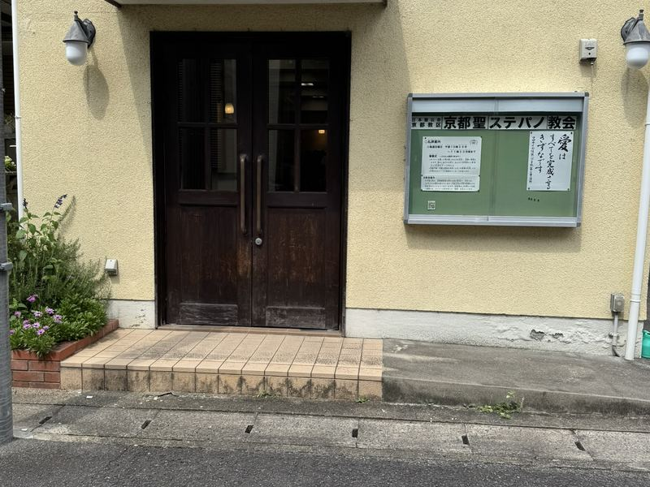
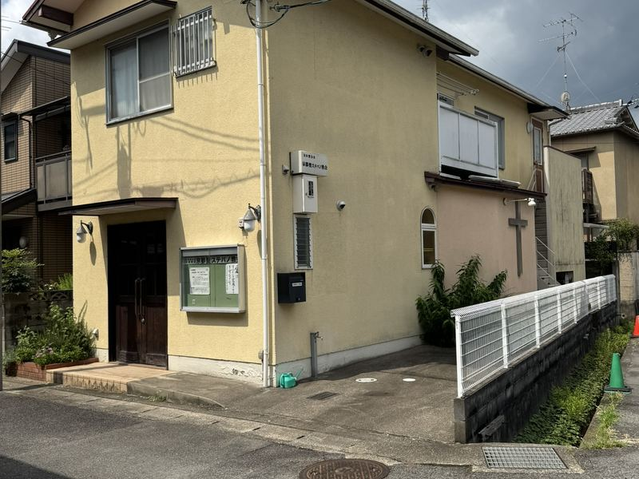
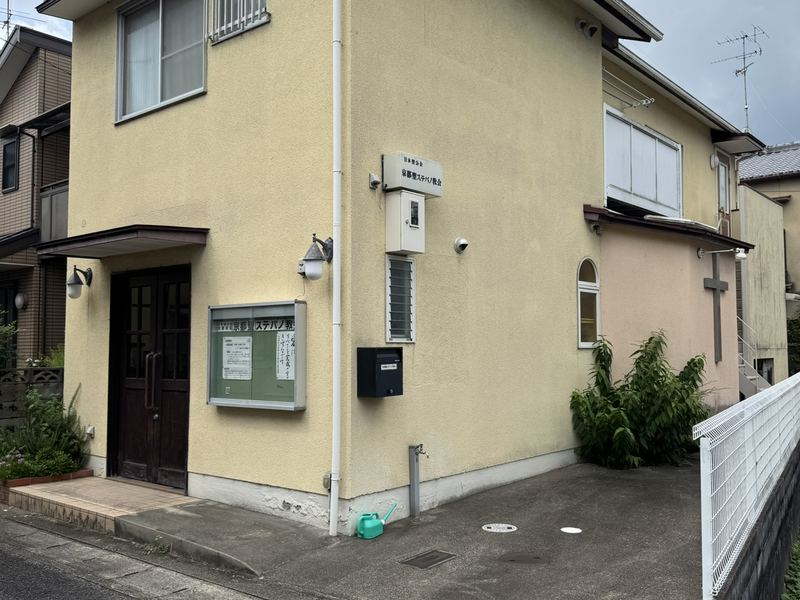
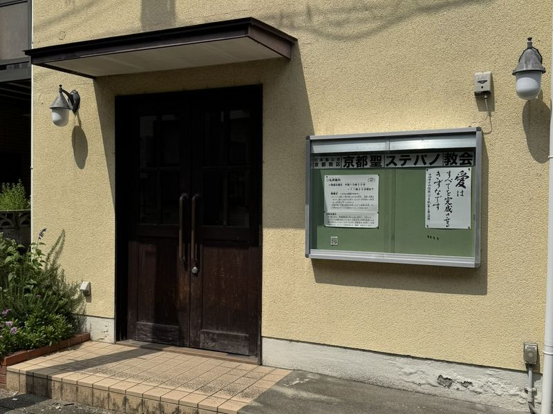
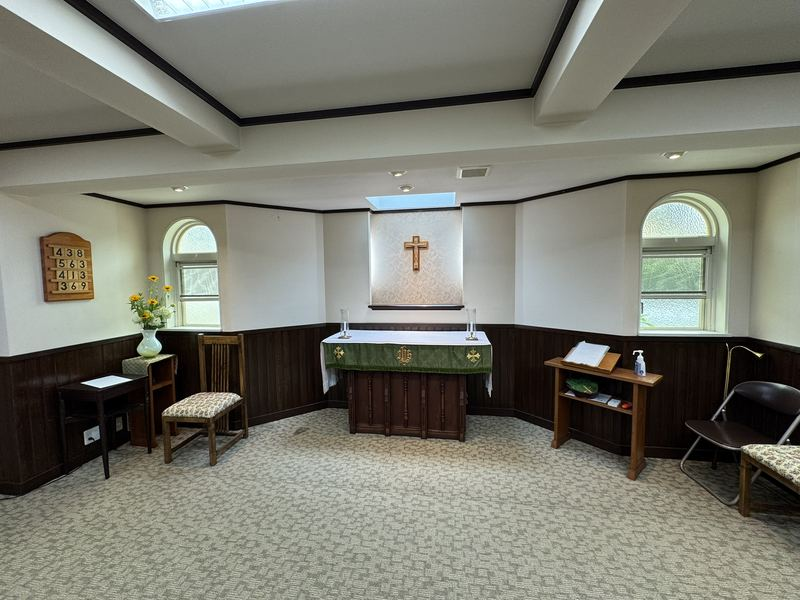
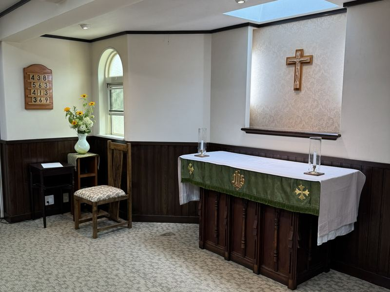

About
玄関
外観
外観(別角度)
看板と掲示板
祭壇
聖堂内観
教会について
京都聖ステパノ教会は、英国国教会の流れをくむ日本聖公会に属する キリスト教の教会です。京都・桂の地で、日曜ごとに礼拝を続けています。
この教会について
京都聖ステパノ教会は、日本聖公会 京都教区に属する教会のひとつです。 「聖ステパノ」の名は、新約聖書に記される最初の殉教者、 ステパノ(ステファノ)に由来します。
(ここに教会の沿革を記載します。創立年、地域との関わり、 歴代の司祭、聖堂の由来など、教会の歴史を数段落で。)
日本聖公会について
聖公会(Anglican Church)は、英国国教会の流れをくむキリスト教の一教派です。 カトリックとプロテスタントの双方の伝統を受け継ぎ、 世界165か国以上に約8,500万人の信徒がいます。
日本聖公会(Nippon Sei Ko Kai)は、その日本における管区で、 全国を11教区に分けて活動しています。京都聖ステパノ教会は 京都教区 に属し、京都府・滋賀県・奈良県・三重県の一部を含む地域の教会と つながりを持っています。
聖堂とその周辺
住宅街に静かに佇む小さな教会です。天窓から光が差し込む聖堂は、祈りの時間にふさわしい落ち着いた空間です。





